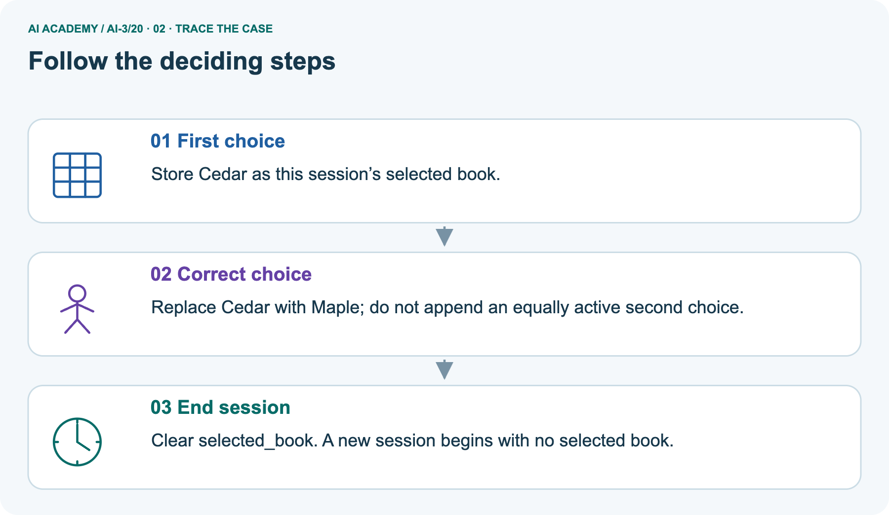
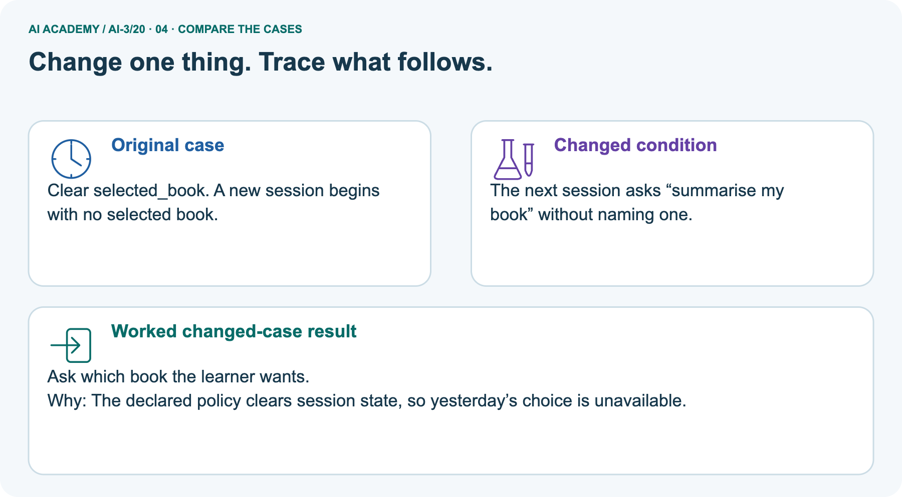
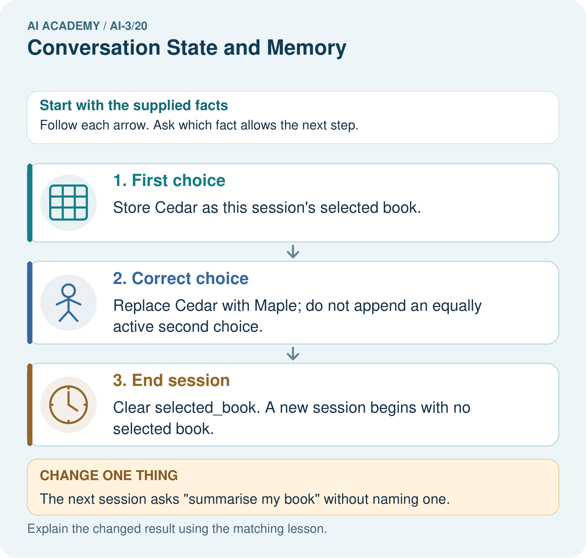
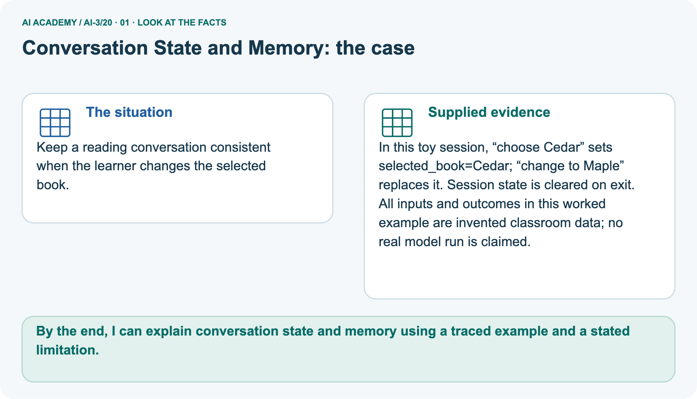
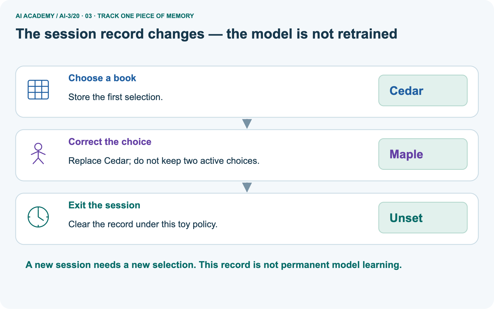
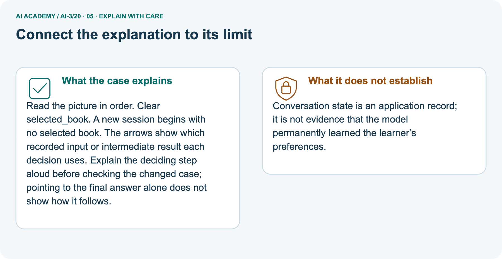
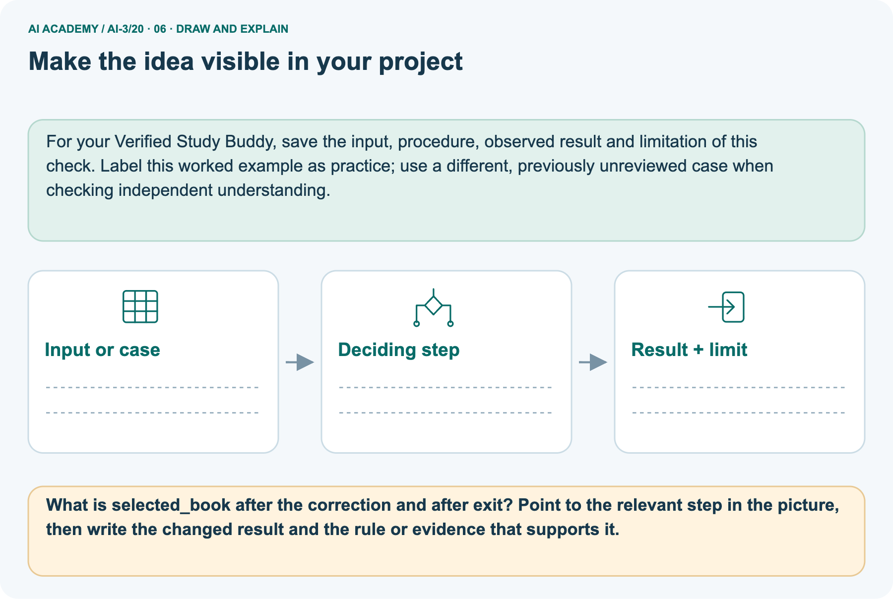

AI Academy · Level 3 · Grade 8 · Week 20 · Student lesson
Conversation State and Memory
Learn to understand, design, build, test and explain AI systems responsibly.
Project: Verified Study Buddy
THE CONNECTED WEEK
Name the purpose. Track the correction. Clear on expiry.
Distinguish current application state from stale summaries and learned parameters.
Keep one habit: Session policy → book-state trace → six retention cards → independent lab-session case.
Main lesson · Section 1
What should the helper keep, replace or clear?
Conversation state needs explicit scope, correction and reset rules.
Your learning goals
I can explain the mechanism and terminology of conversation state and retention.
I can apply the stated procedure to a new case with a traceable result.
I can identify an assumption or limitation and design a revealing follow-up.
Recall different meanings of memory
Close your notes first. A rough first answer helps us choose the right starting point; it is not a score for your ability.
Recall Model Memory vs Retrieval: an application’s stored session fields are different from learned model parameters and retrieved source documents. Name the purpose and lifetime of a retained value.
Your end goal
By the end, I can explain conversation state and memory using a traced example and a stated limitation.
Earlier wording, alternatives and picture transcripts
Your learning target
Remember before reading
Without opening the old lesson, explain one key idea from User Need and AI Contribution. Give an example and a mistake that the idea helps you avoid.
Without opening the old lesson, explain one key idea from Model Memory vs Retrieval. Give an example and a mistake that the idea helps you avoid.
Without opening the old lesson, explain one key idea from Hallucination Failure Types. Give an example and a mistake that the idea helps you avoid.
After trying, check the relevant lesson or ask your teacher. Change the part of your explanation that the evidence shows was wrong.
Week 20: Conversation State and Memory
Products choose what context to keep, summarize, forget, or retrieve.

CREATOR MISSION
Design memory rules for a tutoring conversation.
Creator name and date:
Readiness for the connected explanation
This week’s end goal
Main lesson · Section 2
Separate current fields, summaries and learned parameters
Remembered wording is not automatically current or verified.
Understand application state
Conversation state is an application record used across turns, such as a selected book or current topic. It is not evidence that a model permanently learned that preference. A summary is a derived copy and can become stale when a user corrects a value. Keep only fields needed for the task, attach their source turn, and define when they are replaced or cleared.
Product policies differ; this lesson uses the explicit toy session policy below.
Conversation state stores facts or prior interactions for later use. It needs scope, provenance, correction and retention rules rather than indefinite accumulation.
Use supplied fictional records
Begin by writing the question the procedure is intended to answer. Identify the information already supplied, the information it will produce and the information still missing.
These are constructed classroom examples; they do not require live accounts, private records or an external service. Do not treat a plausible explanation as a measured outcome.
Earlier wording, alternatives and picture transcripts
PICTURE STORY
Notice → Predict → Explain
Begin with visible evidence. Do not explain more than the picture and information support.
MYSTERY
The learners must use conversation state and memory to solve a problem. What information do they have? What decision or calculation do they make? What would count as evidence that it worked?
Three observations (what you can point to):
My prediction and the clue supporting it:
A closer explanation
Main lesson · Section 3
Apply a visible state-transition contract
Current value and audit history have different roles.
Read the complete toy lifetime policy
Toy session policy: keep the one current approved selection only during this session. A correction replaces its active value; retain a minimal old→new audit event only until session end. A cached summary carrying the old selection must be refreshed or invalidated before use. On exit, clear the active selection, summary and session audit. A new session begins without a selection and asks for one.
Do not retain unrelated private text. This classroom contract does not claim to erase model training data or external logs in a real service.
Connect room state and correction
This classroom assistant keeps an approved room ID only for the current session. A later correction replaces the active value but retains an audit event until session end.
Do not persist private text merely because it appeared in conversation.
Respect scope and missing values
Before applying the procedure, write its units, denominator or decision boundary where relevant. A partner should be able to repeat each step using the same inputs.
If a required input is absent or violates the stated contract, record that condition explicitly instead of quietly replacing it with a convenient value.
Explain the deciding check
Point to the input, the deciding step and the result in this week’s visual. Explain the same step in ordinary words. A picture helps when you can say what each part represents.
Earlier wording, alternatives and picture transcripts
VISUAL MECHANISM
Input → Process → Output
Trace the information. At each stage, ask what changed and how you could test it.

↓

↓

Which stage could fail even when the other two are correct? Explain:
A closer explanation
Conversation state and retention — evidence trace
Connect the picture and the explanation
Main lesson · Section 4
Compare a current selection with a stale summary
Two historical choices are not two equally active values.
Four pictures with a purpose

Normal case: predict the result and deciding evidence.

Boundary case: identify the exact limit.

Missing information: name what must be clarified.

Transfer case: explain which procedure still applies.
Choose a revealing case
Which case is most likely to reveal a hidden assumption? Why?
Predict the supplied changed case
Change: The next session asks “summarise my book” without naming one.
Check after predicting
Prediction: Ask which book the learner wants.
Reason: The declared policy clears session state, so yesterday’s choice is unavailable.
Earlier wording, alternatives and picture transcripts
CASE GALLERY
Four Tests, Four Kinds of Evidence
A system is not understood until it survives more than one comfortable example.
NORMAL CASE: predict and name evidence. BOUNDARY CASE: predict and name evidence.
MISSING INFORMATION: predict and name evidence. TRANSFER CASE: predict and name evidence.
Change one thing in the pictured case
Main lesson · Section 6
Trace Cedar → Maple → no active book
The new session does not inherit a selection under this policy.
Read the complete book case
Keep a reading conversation consistent when the learner changes the selected book.
In this toy session, “choose Cedar” sets selected_book=Cedar; “change to Maple” replaces it. Session state is cleared on exit.
All inputs and outcomes in this worked example are invented classroom data; no real model run is claimed.
Trace the pictured transitions



Read the picture one step at a time
Read the picture in order. Clear selected_book. A new session begins with no selected book. The arrows show which recorded input or intermediate result each decision uses.
Explain the deciding step aloud before checking the changed case; pointing to the final answer alone does not show how it follows.
Inspect each state and lifetime
| Event | Active selected_book | Summary / audit action |
|---|---|---|
| Start session | None | No selection to reuse |
| Turn1 choose Cedar | Cedar | Record source turn1 |
| Turn2 change to Maple | Maple | Refresh/invalidate Cedar summary; minimal Cedar→Maple audit |
| Exit | None | Clear session summary and audit |
| New session asks summarise my book | None | Ask which book; do not silently restore Maple |
Predict the next-session question
Change one thing: The next session asks “summarise my book” without naming one. Predict the result before checking the explanation. What remains the same?
Check after predicting



State the application-memory limit
Conversation state is an application record; it is not evidence that the model permanently learned the learner’s preferences.
Read the labelled picture: What is selected_book after the correction and after exit? Point to the relevant step in the picture, then write the changed result and the rule or evidence that supports it.
Separate practice · Room A corrected to B
Turn 1 selects room A; turn 2 corrects to room B. A later answer uses A from an older summary.
Active state should be B under the correction rule. The summary is stale; regenerate or invalidate it and preserve the correction audit within the declared session lifetime.
Earlier wording, alternatives and picture transcripts
WORKED EVIDENCE
Reason Step by Step
Predict first. Then check each step. A correct answer without visible reasoning is incomplete evidence.

1. Keep current topic and learner’s chosen difficulty for the session.
2. Summarize progress without storing full private conversation.
3. Forget sensitive or unnecessary details.
4. Retrieve approved study notes only when the learner requests that topic.
Recalculate, retrace, or restate the reasoning in your own representation:
CHECK Did the evidence answer the exact question? Did the total, path, or source record stay consistent?
A closer explanation
Compare the intermediate evidence with the final statement. Explain why each number or decision follows from the stated inputs.
The conclusion belongs to this scenario and procedure; changing the inputs, evaluation population or authority can change what it establishes. Retain the raw record so a later revision can be compared honestly.
Learn from the worked case
Cover the result before checking it. Say what is given, choose the procedure, and follow one step at a time. Then uncover the result and explain your first mismatch. Ask why a step is allowed, not only what number it produces.
A pictorial worked case: Conversation State and Memory
The facts we will use



Why this result follows
What this example does not establish
Main lesson · Section 7
Find the stale value used as authority
A correction must reach every derived field that the answer uses.
Repair the stale-summary shortcut
Claim to repair: The summary still says Cedar, so Cedar is the active choice. A derived summary cannot override the later explicit correction to Maple. Refresh it or mark it invalid. Keeping both choices active is also wrong under this one-selection contract. After exit, neither is active; asking for a book is correct missing-state behavior, not proof that the model forgot training data.
Design a revealing follow-up
Earlier wording, alternatives and picture transcripts
ERROR DETECTIVE
Compare → Diagnose → Repair
Do not patch the answer. Find the earliest unsupported assumption, wrong step, or weak evidence.

| Evidence record | Expected | Actual | Likely cause / next test |
|---|---|---|---|
| normal case | works | ||
| boundary case | stated rule | ||
| missing input | safe response | ||
| fresh transfer | generalizes |
Repair one cause. Why is this repair better than changing several things?
A closer explanation
Complete the supported workbook tasks before attempting W4 independently. Record any hints or help used. After feedback, use the teacher's fresh retry rather than copying the earlier answer.
For a project, select a relevant new case, predict the outcome from the declared rule and preserve the result alongside any revision.
Main lesson · Section 8
Practise the room correction with less help
Keep the A/B practice distinct from the fresh L1/L2 assessment.
The retention and verification limit
Remembered statements are not automatically current or verified; retention should follow the stated purpose and policy.
Complete the room-state W2
Practise with less help: Trace the worked case
Use workbook W2 for the connected example “Conversation state and retention”. First fill the input and rule boxes. Try the middle steps before asking for a hint. After a hint, try the next step yourself.
| Plan | Do | Check |
|---|---|---|
| What is given? Which rule or procedure applies? | Record each intermediate step. | Does the result follow? What remains unknown? |
Audit a generalisation shortcut
Use the worked case for Conversation state and retention. Proposed explanation: “The worked result establishes every future case”. Decide whether this explanation is supported.
Point to the step or supplied fact that decides; explain your repair if needed.
Answer on your own before discussion. If you are unsure, say which step you need help with.
Check your reasoning
Explain the pictured state transitions
What is selected_book after the correction and after exit? Point to the relevant step in the picture, then write the changed result and the rule or evidence that supports it.
Explain the picture
Keep independent work separate
This is supported practice. Keep the separately named independent case for an attempt before feedback.
Earlier wording, alternatives and picture transcripts
LOGIC STUDIO
Specify Before You Run
Prompts, schemas, retrieval, tool calls, and code are inspectable parts of one AI product.

SET task, audience, constraints, output_schema LOAD approved_context or retrieval_result CALL model or allowed_tool VALIDATE fields, claims, citations, and safety IF evidence missing: ask, retrieve, or abstain RETURN useful output + source trail + limitations
Trace one input. Which line changes the state or chooses a path?
A closer explanation
A useful check asks what would make the reasoning fail. Distinguish a failure to execute the declared procedure from a weakness in the procedure itself.
The first may require a correction; the second requires an explicitly revised method and new evidence. Preserve unsuccessful cases so an improved result cannot hide the original problem.
Explain your trace to a partner. Your partner points to one step to check. Swap roles on the next case. Each person writes their own explanation.
Main lesson · Section 9
Sort six complete state and retention cards
Use purpose and lifetime rather than a keep-everything rule.
All supplied cards and policy guidance
| Supplied fictional information card | Handling under the toy policy |
|---|---|
| A · Current session chooses Cedar at turn1. | Keep selected_book=Cedar with turn provenance until correction or exit. |
| B · Same session corrects book to Maple at turn2. | Replace active selection; minimal audit until exit. |
| C · Cached summary still says Cedar. | Invalidate or regenerate; never treat stale summary as current authority. |
| D · Unrelated private home-address text appears. | Do not copy into task state or summary; no private address is supplied here. |
| E · User asks this Wednesday’s library close; no current notice in state. | Retrieve authorised current notice or report unavailable; state is not an approved schedule source. |
| F · Session exits, then new session asks about my book. | Clear session fields and audit; ask which book. |
Predict, sort and justify the state changes
Cover the handling column and sort each complete card into keep, replace, refresh/invalidate, do not retain, retrieve, or clear/ask. Actions can combine; a correction changes active state and a derived summary. Record purpose, provenance and lifetime for every kept field. Then uncover guidance and explain your first mismatch. Retain only a minimal task summary, never the unrelated private text.
Card E may require retrieval: if the authorised notice is absent, do not invent a time. This is a paper simulation of application state, not a deletion test of a real product. Keep the lab-selection independent case withheld.
Keep the paper-trace evidence
| Test / input | Prediction | Actual | Evidence / calculation | Change or keep? |
|---|---|---|---|---|
| normal | ||||
| boundary | ||||
| missing | ||||
| fresh transfer |
What did the hardest test teach you that the normal test did not?
Before trying: what do I expect, and why? While trying: which step could first go wrong? Afterwards: what did I actually observe, and what should change? Keep “not run” if you only traced the procedure.
Earlier wording, alternatives and picture transcripts
EVIDENCE LAB
Predict → Test → Record → Explain
Keep expected and actual results separate. Surprises are useful data when recorded honestly.

Use the six supplied fictional information cards and explicit session policy. Decide what to keep, replace, refresh, avoid retaining, retrieve or clear; justify purpose, provenance and lifetime. Trace application state without claiming real-service deletion or persistent learning.
Plan → try → check
Main lesson · Section 14
Try alone: trace the fresh lab-selection session
Apply the declared lifetime, rather than assuming permanent memory.
Independent events and policy
A session stores lab L1 then corrects to L2; session ends. A new session has no room input. State the active values at each stage.
Apply the same explicit session-only policy to the supplied lab selection: one active value, correction replaces it, exit clears active state and session audit, and a new session without input has no selection. Trace the stages from the given events; no persistent store or real service is supplied.
Your first attempt and help record
Attempt this case before feedback. Record any help. Earlier examples below are further practice; a case already practised with feedback cannot establish fresh transfer.
Your teacher has the independent answer and scoring criteria. Complete the matching workbook week to keep your practice evidence together.
Use feedback afterwards
Attempt the independent case before hints. Record whether you worked alone, used a hint or followed a model. After feedback, fix the first unsupported step and explain why it changed.
A later check uses a changed case, not a copied answer.
Earlier wording, alternatives and picture transcripts
Independent case: Apply a new case independently
Week 20 Independent application
Close the worked explanation. Apply the idea to this different question without copying.
A learner corrects their project topic from oceans to forests. The next reply still uses oceans. What state should change, and what should not be saved unnecessarily?
My answer, with a trace, calculation or supporting evidence
Create and test
Change one relevant detail. Predict the result before testing. Include a boundary or missing-information case when it helps reveal a limit.
My changed input and expected result
Connect to your project
Store minimal session state and make persistent memory optional, visible, and erasable.
The evidence I will keep
Transfer practice from the original programme
The conversation state is topic=plants, level=Grade 8. The user says 'Keep the topic, explain for Grade 6'. Write the updated state and a reset behaviour.
Use feedback to improve
Main lesson · Section 11
Keep the project’s memory policy visible
Every retained field needs a task purpose and lifetime.
This week’s contribution
For the Verified Study Buddy, list necessary session fields and their sources, correction rule and expiry. Show the current value to the learner, invalidate derived summaries after corrections and provide reset behavior. If designing optional persistent memory later, specify separate visibility, permission and deletion behavior instead of silently extending this session-only policy.
A user’s earlier claim still needs verification before becoming a factual answer.
For your Verified Study Buddy, save the input, procedure, observed result and limitation of this check.
Label this worked example as practice; use a different, previously unreviewed case when checking independent understanding.
Retain the checkpoint and human choice
THIS WEEK’S CHECKPOINT Store minimal session state and make persistent memory optional, visible, and erasable.
SYSTEM MAP Learner need → prompt/schema → approved sources/retrieval → model/tool → structured answer → verification → human decision
What will you add, change, or verify in the project this week?
What should remain under human control?
RESPONSIBLE DESIGN Collect only necessary information. Show uncertainty and limits. Never confuse fluent output with verified truth.
Earlier wording, alternatives and picture transcripts
CUMULATIVE PROJECT
Verified Study Buddy
Every week adds one inspectable piece. The system must show how it reached a result.

Evidence for your project
Main lesson · Section 16
Finish: state the current value and its lifetime
A summary, an active field and a learned parameter are different things.
Explain without notes
Close your notes. Explain this goal in your own words: Explain the mechanism and terminology of conversation state and retention
Plan a changed-case return
If you are unsure, return to the worked picture and explain one arrow. If you are ready, change an input or assumption and justify your prediction.
Save your workbook evidence. At the next review, try a different case before opening your old answer.
Reference bank and extra practice
Choose the reference that helps your next step.
Your quick word guide
Reference · Section 5
Your quick word guide
Use the words to explain a particular step, record or limit.
Core vocabulary
| Word | My own example | Not this / boundary |
|---|---|---|
| state | The current values and information that determine what a process does next. | |
| session memory | Information maintained during the current interaction, without assuming it persists afterwards. | |
| persistent memory | Information retained beyond the current session by an explicit storage mechanism. | |
| retention rule | A policy specifying what information is kept, for how long and when it is deleted. |
Terms for the connected explanation
| Word | Meaning |
|---|---|
| Session state | Information retained within a defined interaction lifetime |
| Correction event | A record updating an earlier active value |
Earlier wording, alternatives and picture transcripts
VOCABULARY LAB
Words You Can Use to Reason
A definition matters when you can recognize the idea, use it, and contrast it with a near-miss.


Words used in the closer explanation
Choose a stronger thinking challenge
Reference · Section 10
Choose a stronger thinking challenge
Choose the next useful challenge rather than treating the whole ladder as compulsory.
Pick your next step
1 • NAME: Define the concept without repeating the textbook.
2 • TRACE: Show the information, state, branch, calculation, or evidence path.
3 • APPLY: Solve a different example independently.
4 • CHALLENGE: Find a boundary case, counterexample, or unfair outcome.
5 • EXPLAIN LIMITS: Say when the result should not be trusted or used alone.
My strongest evidence of independent understanding:
Earlier wording, alternatives and picture transcripts
MASTERY
From Knowing the Word to Owning the Idea
Move upward only when you can produce evidence without copying the worked example.

Reference: check your explanation
Reference · Section 12
Reference: check your explanation
Use after practice. Trace the new lab-selection session independently is the selected independent case.
Check the evidence and its limit
1. My fresh example, trace, calculation, or design:
2. My evidence that it works (include a boundary or missing-data case):
3. One limitation, fairness concern, or situation needing human review:
Self-check and record
SELF-CHECK □ I explained the mechanism □ I used evidence □ I tested a fresh case □ I named a limitation □ I can answer ‘why?’
Earlier wording, alternatives and picture transcripts
INDEPENDENT MASTERY PROOF
Checklist for explaining this week’s idea
Use after practice. Trace the new lab-selection session independently is the selected independent case.

EXPLANATION CHECK Require one active value, correction propagation, cleared state after exit and an evidence-seeking new-session response.
Extra practice: Update only the state the user changed
Reference · Section 13
Extra practice: Update only the state the user changed
Try the question before opening its worked explanation.
Read the supplied case and question
State stores topic=plants and reading_level=beginner. User requests advanced explanation.
What changes?
Your explanation
Which detail supports the answer, and why does it matter?
Check after trying
Update reading level, retain topic unless changed. Keep only necessary state with correction/reset. Context does not guarantee permanent memory.
| Evidence or stage | Value or result |
|---|---|
| Before | topic=plants, level=beginner |
| Request | Use an advanced explanation |
| After | topic=plants, level=advanced |
| Reset | Clear stored fields when requested |
Earlier wording, alternatives and picture transcripts
Week 20 Worked case
Use the supplied details to practise the weekly concept before attempting the independent question. This case extends the illustrated lesson.
The situation
The question
Worked explanation
Explain it in your own words
Trace the supplied case visually
Update only the state the user changed
State stores topic=plants and reading_level=beginner. User requests advanced explanation.
What changes?
Update reading level, retain topic unless changed. Keep only necessary state with correction/reset. Context does not guarantee permanent memory.
Reference: original lesson checklist
Reference · Section 15
Reference: original lesson checklist
Use an additional checklist when it helps inspect your explanation.
Targets and evidence
| By the end, I can | How I will show it |
|---|---|
| Explain the mechanism and terminology of conversation state and retention | Explain the deciding step, show a trace or test, and state one limit. |
| Apply the stated procedure to a new case with a traceable result | Explain the deciding step, show a trace or test, and state one limit. |
| Identify an assumption or limitation and design a revealing follow-up | Explain the deciding step, show a trace or test, and state one limit. |
Keep your route and first prediction
Remember → watch and explain → try with help → investigate → try independently → keep project evidence. Your teacher may spread this lesson across several classes.
Keep your first prediction. Compare it with what the evidence shows and explain any change.
Earlier wording, alternatives and picture transcripts
Start with this question: Keep a reading conversation consistent when the learner changes the selected book.
Extra practice: pictures, repair and feedback
Reference · Section 17
Extra practice: pictures, repair and feedback
Attempt each question before opening its explanation. Use one browser or paper copy.
First supported question
Keep a reading conversation consistent when the learner changes the selected book.
Which labelled step matches this detail? Clear selected_book. A new session begins with no selected book.
1. First choice
2. Correct choice
3. End session
Hint if needed: Read the steps in the pictorial case. Match the supplied detail to the stage that performs or records it.
After your attempt, compare with the supported explanation: End session Clear selected_book. A new session begins with no selected book. Read the picture in order. Clear selected_book.
A new session begins with no selected book. The arrows show which recorded input or intermediate result each decision uses.
Explain the deciding step aloud before checking the changed case; pointing to the final answer alone does not show how it follows.
Practice 1: explain the deciding evidence
Check the first explanation
Practice 2: explain the deciding evidence
Changed-case question
Changed-case practice: The next session asks “summarise my book” without naming one. Which conclusion is supported by the supplied facts?
1. Ask which book the learner wants.
2. We can decide the result without examining the changed input or the procedure.
3. This one example guarantees correct results for every future input.
Hint if needed: Use the changed condition and the deciding step in the pictorial trace. The answer must say what follows from those facts.
After your attempt, compare with the supported explanation: Ask which book the learner wants. The declared policy clears session state, so yesterday’s choice is unavailable.
Check the changed case
Repair a missing building block
Repair and save your work
Review User Need and AI Contribution (ai-3/19). Goal: Explain the mechanism and terminology of capstone requirements and corpus. Short practice: What non-AI baseline would reveal whether this helper adds value?
Point to the relevant step in the picture, then write the changed result and the rule or evidence that supports it.. Return to this week and explain what you changed.
Review Model Memory vs Retrieval (ai-3/17). Goal: Explain the mechanism and terminology of retrieval and indexing. Short practice: Why can the assistant not certify 15: 00 when the notice is missing?
Point to the relevant step in the picture, then write the changed result and the rule or evidence that supports it.. Return to this week and explain what you changed.
Review Hallucination Failure Types (ai-3/14). Goal: Explain the mechanism and terminology of generation failures and verification. Short practice: Can we conclude there will definitely be no lunch from S alone?.
Return to this week and explain what you changed.
Use Download completed work in the hosted lesson to export your answers, reflections, practice feedback and code-run evidence. Open the HTML copy to read or print it.
Drafts stay in this browser when storage is available; clear drafts on a shared device.
Earlier wording, alternatives and picture transcripts
Use this supported practice once, in the browser or on paper. Keep the reserved independent assessment for a separate first attempt before teacher feedback.
Keep your completed work
Reference: the six-picture journey
Reference · Section 18
Reference: the six-picture journey
Revisit the picture that serves the current question; key diagrams already sit beside the main explanation.
01. Conversation State and Memory: the case



Keep a reading conversation consistent when the learner changes the selected book. Supplied facts: In this toy session, “choose Cedar” sets selected_book=Cedar; “change to Maple” replaces it. Session state is cleared on exit.
All inputs and outcomes in this worked example are invented classroom data; no real model run is claimed.
Point to the given fact that matters most. Explain why it matters.
02. Follow the deciding steps
First choice: Store Cedar as this session’s selected book. → Correct choice: Replace Cedar with Maple; do not append an equally active second choice. → End session: Clear selected_book.
A new session begins with no selected book.
Point to each numbered stage and explain which recorded input it uses.
03. The session record changes — the model is not retrained



The selected_book session state is Cedar after the first choice, Maple after correction, and unset after exit. This is an application record, not proof of permanent learning.
Read the labels and values. Explain the relationship the model shows.
04. Change one thing. Trace what follows.
Original case: Clear selected_book. A new session begins with no selected book. Changed condition: The next session asks “summarise my book” without naming one. Expected result: Ask which book the learner wants.
Reason: The declared policy clears session state, so yesterday’s choice is unavailable.
Predict before checking the worked changed-case result. Name what changed and what the supplied facts allow you to conclude.
05. Connect the explanation to its limit



Read the picture in order. Clear selected_book. A new session begins with no selected book. The arrows show which recorded input or intermediate result each decision uses.
Explain the deciding step aloud before checking the changed case; pointing to the final answer alone does not show how it follows.
Limit: Conversation state is an application record; it is not evidence that the model permanently learned the learner’s preferences.
Explain the case, then point to a limit on the claim.
06. Make the idea visible in your project



For your Verified Study Buddy, save the input, procedure, observed result and limitation of this check.
Label this worked example as practice; use a different, previously unreviewed case when checking independent understanding. Draw your input, deciding step, result and limit.
Supported question: What is selected_book after the correction and after exit? Point to the relevant step in the picture, then write the changed result and the rule or evidence that supports it.
Draw your project trace and justify the deciding step using evidence.